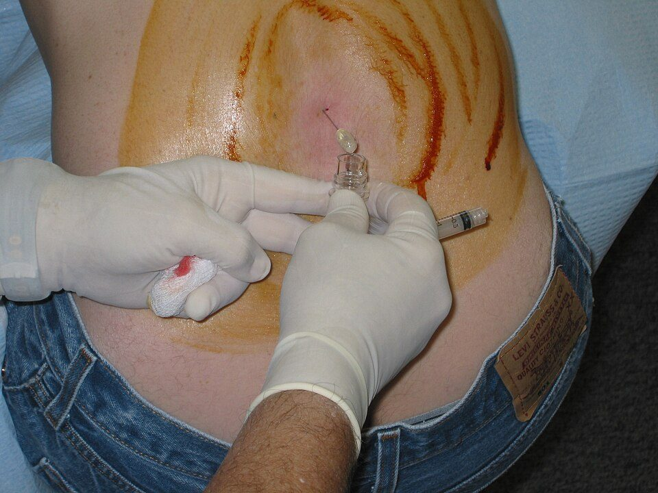
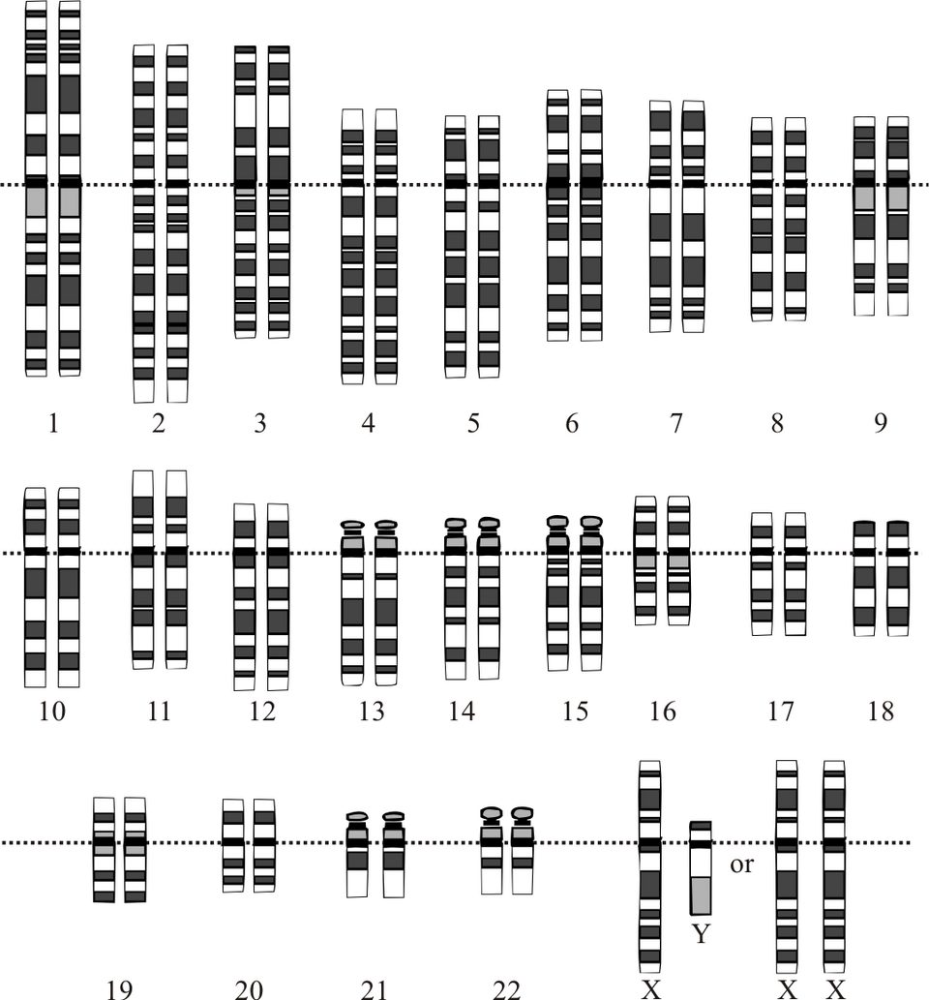

De la sospecha a las pruebas
Exploración neurológica, TC, resonancia, electroencefalograma, electromiograma, punción lumbar, PET y DaTSCAN, doppler, genética y test de memoria.
Exploración y test
 Exploración y test
Exploración y testExploración neurológica
Con un martillo de reflejos, una linterna y unas pocas maniobras, el neurólogo puede localizar dónde está el problema antes de pedir ninguna prueba. Qué se explora y por qué.
Leer → Exploración y test
Exploración y testTest cognitivos
Pruebas breves de memoria, atención y lenguaje, como el MoCA o el test del reloj, y evaluaciones neuropsicológicas completas. Qué miden y por qué un resultado no es un diagnóstico.
Leer →Pruebas de imagen
 Pruebas de imagen
Pruebas de imagenTC craneal
La tomografía computarizada es rápida y está en todos los hospitales: es la primera prueba ante un ictus, un traumatismo o un dolor de cabeza súbito. Qué ve y qué no.
Leer → Pruebas de imagen
Pruebas de imagenResonancia magnética cerebral
La prueba que mejor ve el cerebro y la médula, sin radiación. Para qué se pide, cómo se prepara, qué secuencias existen y por qué hay que avisar si llevas metal en el cuerpo.
Leer → Pruebas de imagen
Pruebas de imagenPET, SPECT y DaTSCAN
Pruebas de medicina nuclear que muestran cómo funciona el cerebro y qué proteínas acumula: consumo de glucosa, depósitos de amiloide o tau, o pérdida de neuronas de dopamina.
Leer → Pruebas de imagen
Pruebas de imagenEcografía doppler y angiografía
Para ver las arterias que llevan sangre al cerebro: el doppler, sin pinchazos, y la angiografía, la prueba más precisa, que además permite tratar.
Leer →Pruebas neurofisiológicas
 Pruebas neurofisiológicas
Pruebas neurofisiológicasElectroencefalograma (EEG)
Registra la actividad eléctrica del cerebro con electrodos en el cuero cabelludo. Es la prueba básica en la epilepsia y también se usa en el coma, el sueño y las encefalitis.
Leer → Pruebas neurofisiológicas
Pruebas neurofisiológicasElectromiograma y estudios de conducción nerviosa
Miden cómo conducen los nervios la señal eléctrica y cómo responden los músculos. Imprescindibles para estudiar el túnel carpiano, las neuropatías, la ELA o la miastenia.
Leer → Pruebas neurofisiológicas
Pruebas neurofisiológicasPotenciales evocados
Miden cuánto tarda el cerebro en responder a un estímulo visual, auditivo o táctil. Detectan lesiones «silenciosas» de las vías nerviosas, por ejemplo en la esclerosis múltiple.
Leer →Laboratorio y genética

Laboratorio y genéticaPunción lumbar
Se extrae un poco de líquido cefalorraquídeo con una aguja fina en la parte baja de la espalda. Es clave en la meningitis, la esclerosis múltiple o el alzhéimer. Cómo es y qué molestias puede dar.
Leer →
Laboratorio y genéticaPruebas genéticas en neurología
Muchas enfermedades neurológicas tienen una causa genética. Qué pruebas existen, cuándo se piden, qué significa un resultado y por qué el consejo genético es imprescindible.
Leer →